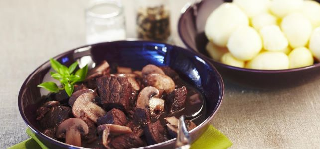

SPENDING A NIGHT WITH YOUR FAMILLY : WHAT TO DO ?
Friday or Saturday night is finally here! You'll be able to relax and enjoy a delicious evening with your family! Usually, you organize an aperitif, sometimes an improved dinner and sometimes you watch a series or a movie all together... But how about changing the program to spend a more original evening? There will be something for everyone and for every taste. Many activities are proposed to suit the youngest member of the family as well as the grandparents.
Don't hesitate to let the kids help you plan your family night to make it more appealing. Once it becomes a habit, family night will probably become your favourite night of the week!
2 - The beef bourgignon :

Beef bourguignon is one of the most emblematic recipes of French cuisine.
The old-fashioned recipe consists of a beef stew with carrots and mushrooms. And of course, a wine sauce!
It is a delicious and convivial dish that everyone can enjoy. However, it takes patience to eat it. Beef bourguignon is a simmered dish and the cooking of the beef requires a lot of time to melt.
What if we told you that there is a quick version of this beef recipe? Discover now the steps
to make a beef bourguignon in just 1 hour and enjoy a good dish without effort in our menu!